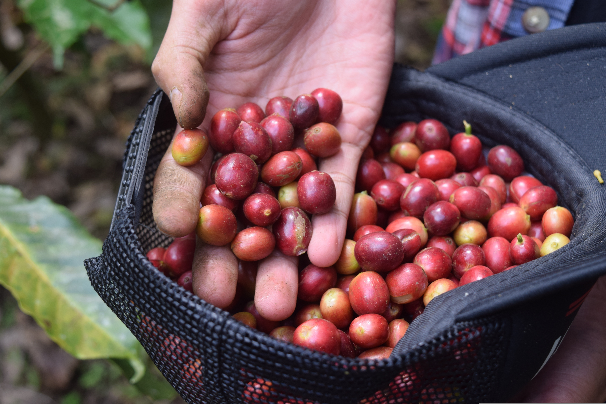
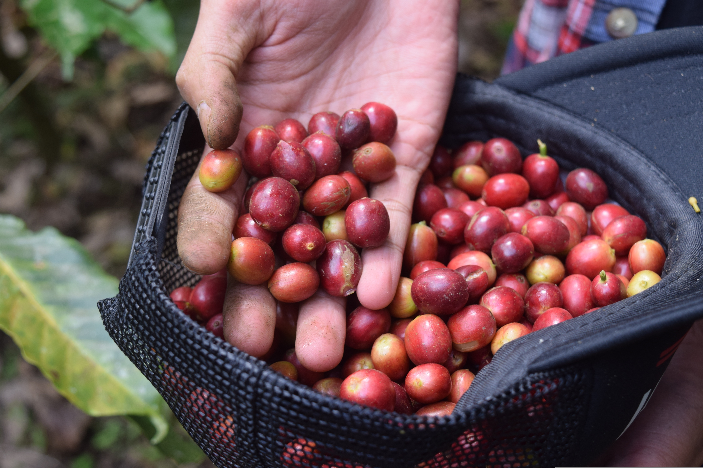

About Us
Our Farms
 

COFFEE MADE WITH LOVE AND PASSION
Coffee is an industry built on inequality—where unseen workers have little voice in the marketplace for the fruit of their labors. As a result of these long-held, traditional practices within coffee, most coffee growers live in poverty. In recent years, coffee drinkers have become more aware of this history, fueling a growing demand among consumers for great tasting coffee that is also ethically and sustainably sourced. However, we know that buying coffee can be confusing and that labels can oftentimes be misleading.
Coffee Made With Love And Passion, our company mission, is all about giving selling power back to coffee farmers as well as purchasing power into the hands of our customers. Our long term farming partners negotiate their pricing based on cost of production as well as quality of product, not on fluctuating, unpredictable market pricing. This enables them to create thriving businesses with bright futures. Consumers are empowered by knowing exactly who grows their coffee and how, as well as knowing they are part of a new, sustainable, global coffee network. In this flourishing system, customers gain reliable access to exceptional coffee, even in unstable times.
How It All Began
In 2006, we began roasting coffee, relying heavily on labels and information from importers to understand what we were sourcing. But in 2010, we met our first direct trade farming partner, Ben Waker friendship that radically shifted our understanding of coffee growing and sourcing. It also started us on a new path. We discovered the perpetual fulfillment we get from connecting exceptional coffee growers with appreciative coffee drinkers. That joy has kept us going ever since. Over the years, we have been honored to have our coffees win several Awards.

Awards
Good Food Award - 2016, 2023
Golden Bean Gold, Silver, and Bronze winners - 2017, 2018, 2019, 2021, 2022
National Roasters Competition Finalist - 2018